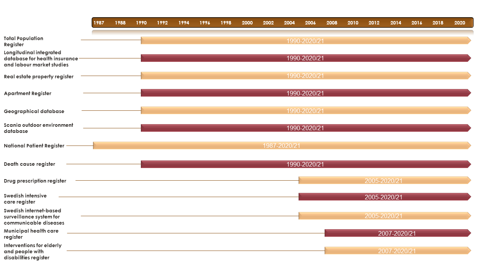

3 Data Sources and Registers
3.1 Overview
The study period in Register RELOC-AGE ranges from 1990-2020 and is comprised of 13 registers with staggered coverage which is illustrated below.

The table below gives a description of the various registers, noting the types of variables contained within.
| Register | Description |
|---|---|
| Total Population Register (TPR) (1968) | Sex; birth date; civil status (duration, dates, changes); address (dates, changes); income; country of origin; citizenship; in-/emigration (dates); n of people in the dwelling; housing tenure; socioeconomic indicators of the neighbourhoods (on postal code, municipal levels) |
| National Patient Register (NPR) (1987) | Hospitalization outcomes: total no. of hospitalizations/month; in-patient health outcomes based on ICD-10 chapters (e.g., for falls, fractures, stroke etc.) |
| Real Estate Property Register (REPR) (1908) | Objective housing characteristics for each dwelling: type of dwelling; price of dwelling; type of tenure; size; presence of stairs/elevator; floor; building and construction year; characteristics of the neighbourhood: communal facilities (e.g., roads), green areas; date of each relocation |
| Geographical database (GD) (1952) | DESO (demographical statistical unit); coordinates of the housing and address etc. |
| Death Cause Register (DR) (1952) | Death cause and date |
| Longitudinal integrated database for health insurance and labour market studies (LISA) (1990) | Education level, income, social insurance |
| Drug Prescription Register (DPR) (2005) | Drug prescriptions for chronic illnesses (ATC code, dose and date): endocrine; cardiovascular; hepatic; renal or neurological/ neuromuscular |
| Swedish Intensive Care Register (SIRI) (2001) | Intensive care for laboratory-confirmed influenza and (since 2020) COVID-19. |
| Swedish internet-based surveillance system for communicable diseases (SmiNet) (1997; 2004) | Laboratory-confirmed influenza and (since 2020) COVID-19 |
| Municipal Health Care Register (MHCR) (2007) | Care received and date |
| Interventions for Elderly and People with Disabilities Register (IEPDR) (2007) | Home help and service type and no of hours/month/year: escorting, replace the relative, personal care, meal delivery, security alarm, daytime activities; short-term vs long-term |
| Apartment Register (AR) (2012) | Dwelling type; number of rooms; dwelling unit size; kitchen type |
| Scania Outdoor Environment Database (ScOut) | 24 outdoor environemtn qualities 2008-2019 |
3.2 Total Population Register
- Description: Provides comprehensive demographic information for all individuals registered in Sweden, including personal identity numbers, birth dates, sex, marital status, country of birth, citizenship, and migration details.
- Time Period: 1968–2022
-
Key Variables:
- Personal identity number
- Birth date
- Sex
- Marital status
- Country of birth
- Citizenship
- Migration details (immigration and emigration dates)
- Data Provider: Statistics Sweden
- Considerations: This register is crucial for linking individuals across different datasets using personal identity numbers.
3.3 Longitudinal Integration Database for Health Insurance and Labour Market Studies (LISA)
- Description: Integrates data from various sources to provide information on employment, income, education, and social benefits for individuals aged 16 and above.
- Time Period: 1990–2022
-
Key Variables:
- Employment status
- Income levels
- Educational attainment
- Social benefits received
- Data Provider: Statistics Sweden
- Considerations: LISA is updated annually and is essential for analyzing socioeconomic factors in relation to health and housing outcomes.
3.4 National Patient Register
- Description: Contains information on inpatient and outpatient care, including diagnoses, treatments, and hospital admissions and discharges.
- Time Period: 1987–2022
-
Key Variables:
- Diagnoses (ICD codes)
- Treatments and procedures
- Hospital admissions and discharge dates
- Data Provider: National Board of Health and Welfare
- Considerations: The register is vital for analyzing health outcomes and their association with housing choices.
3.5 Cause of Death Register
- Description: Provides data on mortality, including dates and causes of death, for all deceased individuals registered in Sweden.
- Time Period: 1961–2022
-
Key Variables:
- Date of death
- Underlying cause of death
- Contributing causes of death
- Data Provider: National Board of Health and Welfare
- Considerations: This register allows for the examination of mortality rates and causes in relation to housing and relocation patterns.
3.6 Dwelling Register
- Description: Contains detailed information on housing and living conditions, including type of dwelling, ownership status, and household composition.
- Time Period: 2012–2022
-
Key Variables:
- Type of dwelling (e.g., apartment, single-family house)
- Ownership status (owned, rented)
- Household composition (number of residents, family structure)
- Data Provider: Statistics Sweden
- Considerations: This register is essential for analyzing housing choices and their impact on health outcomes.